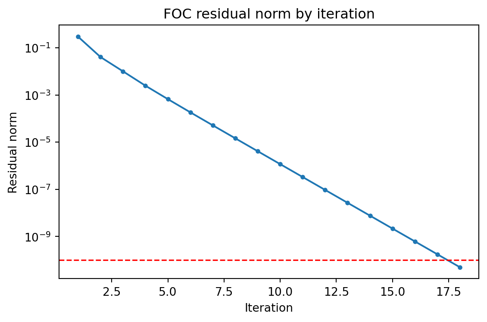
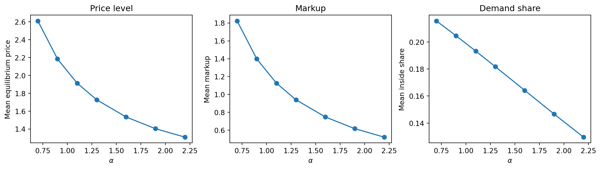
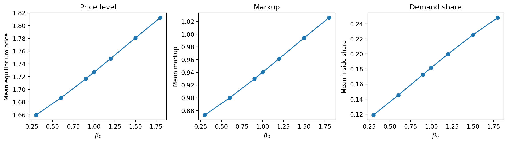
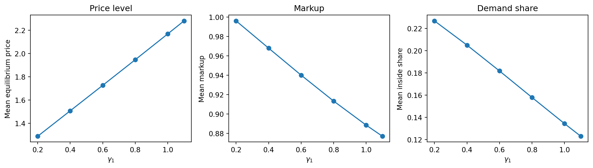

import sys
sys.path.insert(0, "..")
sys.path.insert(0, "../../src")
import matplotlib.pyplot as plt
import numpy as np
import pandas as pd
from config_opm import build_opm_solver_config
from config_opm import get_comparative_statics
from opm_solver import (
ComputeFOCResidual,
ComputeMarginalCost,
ComputeMeanUtility,
ComputeShares,
SolveNashEquilibrium,
)Solving Static Oligopoly Pricing Model
Model Setup
We consider a static differentiated-products oligopoly in one market. There are \(J\) inside products indexed by \(j \in \{1, \ldots, J\}\) and an outside option indexed by \(0\). Each inside product is supplied by a distinct single-product firm, so firm \(j\) chooses only the price of product \(j\). Let the observed product characteristics be \(Z_j \in \mathbb{R}^K\).
For each product, the characteristic vector is partitioned into demand shifters and cost shifters. Let \(X_j = S_X Z_j\) denote the subset or linear index of characteristics that enters demand, and let \(W_j = S_W Z_j\) denote the subset or linear index of characteristics that enters marginal cost, where \(S_X\) and \(S_W\) are selection or loading operators. The two indices may overlap, but they play different structural roles in utility and cost.
A representative consumer has indirect utility from product \(j\) given by
\[ u_j = \delta_j + \varepsilon_j, \quad \delta_j = X_j' \beta - \alpha p_j, \]
where \(\delta_j\) is mean indirect utility including the price term, \(p_j\) is price, \(\alpha > 0\) is the marginal utility of income parameter, \(\beta\) is a demand-parameter vector, and \(\varepsilon_j\) is an idiosyncratic taste shock. This \(\delta_j\) is the object recovered in demand estimation. For the outside option, utility is normalized as
\[ u_0 = \varepsilon_0. \]
Assume the taste shocks \(\{\varepsilon_j\}_{j=0}^J\) are independent and identically distributed Type-I Extreme Value.
Marginal cost for product \(j\) is constant in quantity within the market and is parameterized by the cost index:
\[ mc_j = W_j' \gamma, \]
where \(\gamma\) is a cost-parameter vector. Marginal cost is constant in quantity within each market for each product.
The timing is as follows. First, product characteristics \(Z_j\) are given. Second, firms simultaneously choose prices \(p_1, \ldots, p_J\). Third, consumers choose among the \(J\) inside products and the outside option. The objective in subsequent sections is to characterize equilibrium prices under this environment, but we do not derive demand shares or optimal pricing conditions in this section.
Characterization of the Solution
Demand Side
Under this assumption, the market share for inside product \(j\) is
\[ s_j(p) = \frac{\exp(\delta_j)}{1 + \sum_{k=1}^J \exp(\delta_k)}, \]
where \(\delta_j = X_j' \beta - \alpha p_j\). The outside share is
\[ s_0(p) = \frac{1}{1 + \sum_{k=1}^J \exp(\delta_k)}. \]
These expressions map the full price vector \(p = (p_1, \ldots, p_J)'\) into demand quantities through choice probabilities.
For the supply side first-order conditions, we also need the Jacobian of shares with respect to prices. For each pair \((j,k)\),
\[ \frac{\partial s_j}{\partial p_k} = -\alpha s_j(\mathbf{1}\{j=k\} - s_k). \]
Hence own-price and cross-price derivatives are
\[ \frac{\partial s_j}{\partial p_j} = -\alpha s_j(1 - s_j), \quad \frac{\partial s_j}{\partial p_k} = \alpha s_j s_k \text{ for } k \neq j. \]
Supply Side Nash Equilibrium
Each single-product firm \(j\) chooses \(p_j\) to maximize static profit
\[ \pi_j(p) = (p_j - mc_j) s_j(p), \quad mc_j = W_j' \gamma. \]
Taking rivals’ prices as given, the first-order condition for firm \(j\) is
\[ \frac{\partial \pi_j}{\partial p_j} = s_j(p) + (p_j - mc_j)\frac{\partial s_j(p)}{\partial p_j} = 0. \]
Substituting the logit own-price derivative gives
\[ s_j(p) - \alpha (p_j - mc_j) s_j(p)(1 - s_j(p)) = 0, \]
or equivalently
\[ p_j = mc_j + \frac{1}{\alpha (1 - s_j(p))}. \]
A Nash equilibrium price vector is any \(p^* \in \mathbb{R}^J\) that solves this system for all \(j=1,\ldots,J\) simultaneously:
\[ F_j(p) \equiv s_j(p) + (p_j - mc_j)\frac{\partial s_j(p)}{\partial p_j} = 0. \]
To validate numerical convergence, we track the residual norm at each solver iteration and verify that the full residual path declines to the tolerance target. This sequence is reported together with final diagnostics.
Pseudocode
The solver is organized into small reusable procedures so each formula is implemented once and reused by higher-level routines. All constants and options are passed through a single configuration object, and all stochastic components use a fixed seed stored in the configuration to make outputs reproducible. End-to-end validation additionally runs one-at-a-time comparative statics over the price coefficient, one demand coefficient, and one cost coefficient, and records how equilibrium outcomes move with these parameter changes.
NoteAlgorithm: Static Oligopoly Pricing Solver
Input:
- config: dict
- model: dict (
beta,gamma,alpha,J) - data: dict (
Z,S_X,S_W) - solver: dict (
tol,max_iter,method) - reproducibility: dict (
seed) - initialization: dict (
p_init)
- model: dict (
Output:
- p_star: Vector[J] (Nash equilibrium prices)
- diagnostics: dict (
residual_norm,iterations,converged,solver_status,residual_history)
Main Procedure
Procedure SolveNashEquilibrium(config: dict) -> (Vector[J], dict)
SetRandomSeed(seed=config[“reproducibility”][“seed”])ValidateConfig(config=config)root_result<-SolveNonlinearSystem( function=ComputeFOCResidual, initial_value=config[“initialization”][“p_init”], function_args={“config”: config}, method=config[“solver”][“method”], tolerance=config[“solver”][“tol”], max_iterations=config[“solver”][“max_iter”] )p_star<- root_result[“solution”]residual<-ComputeFOCResidual(p=p_star, config=config)residual_norm<-ComputeResidualNorm(residual=residual)diagnostics<-BuildDiagnostics(root_result=root_result, residual_norm=residual_norm)- Return
(p_star, diagnostics)
Demand Procedures
Procedure ComputeMeanUtility(p: Vector[J], config: dict) -> Vector[J]
X<-BuildDemandShifterIndex(Z=config[“data”][“Z”], S_X=config[“data”][“S_X”])- Return
X @ config["model"]["beta"] - config["model"]["alpha"] * p
Procedure ComputeShareCoreTerms(delta: Vector[J]) -> (Vector[J], float, Vector[J])
exp_delta<-Exp(delta=delta)denom<-1.0 + Sum(x=exp_delta)s_inside<-exp_delta / denom- Return
(exp_delta, denom, s_inside)
Procedure ComputeShares(delta: Vector[J]) -> (Vector[J], float)
(_, denom, s_inside)<-ComputeShareCoreTerms(delta=delta)s_outside<-1.0 / denom- Return
(s_inside, s_outside)
Procedure ComputeShareJacobian(delta: Vector[J], alpha: float) -> Matrix[JxJ]
(_, _, s_inside)<-ComputeShareCoreTerms(delta=delta)- For each
(j, k)in{1, ..., J} x {1, ..., J}:jacobian[j, k]<--alpha * s_inside[j] * (Indicator(j == k) - s_inside[k])
- Return
jacobian
Supply Procedures
Procedure ComputeMarginalCost(config: dict) -> Vector[J]
W<-BuildCostShifterIndex(Z=config[“data”][“Z”], S_W=config[“data”][“S_W”])- Return
W @ config["model"]["gamma"]
Procedure ComputeFOCResidual(p: Vector[J], config: dict) -> Vector[J]
delta<-ComputeMeanUtility(p=p, config=config)(s_inside, _)<-ComputeShares(delta=delta)jacobian<-ComputeShareJacobian(delta=delta, alpha=config[“model”][“alpha”])mc<-ComputeMarginalCost(config=config)- For each
jin{1, ..., J}:residual[j]<-s_inside[j] + (p[j] - mc[j]) * jacobian[j, j]
- Return
residual
Comparative Statics Validation Procedure
Procedure RunComparativeStatics(base_config: dict, statics: dict) -> DataFrame
- Define three experiments:
- vary
alphaoverstatics["alpha_values"] - vary
beta[0]overstatics["beta_0_values"] - vary
gamma[1]overstatics["gamma_1_values"]
- vary
- For each experiment and each grid value:
- copy
base_config - update only the target parameter
- set initialization price to the previous solved equilibrium (warm start)
- solve equilibrium with
SolveNashEquilibrium - compute endogenous outcomes (
mean_price,mean_markup,mean_inside_share)
- copy
- Stack all outcomes into one table and return it.
Execution
config = build_opm_solver_config()
p_star, diagnostics = SolveNashEquilibrium(config=config)
residual = ComputeFOCResidual(p=p_star, config=config)
mc = ComputeMarginalCost(config=config)
tol = float(config["solver"]["tol"])
validation_tol = max(1e-8, 10.0 * tol)
assert diagnostics["converged"] is True
assert diagnostics["residual_norm"] <= validation_tol
assert float(np.max(np.abs(residual))) <= validation_tol
print("Convergence metrics")
print(f" converged: {diagnostics['converged']}")
print(f" iterations: {diagnostics['iterations']}")
print(f" solver_status: {diagnostics['solver_status']}")
print(f" tolerance: {tol:.2e}")
print(f" residual_norm: {diagnostics['residual_norm']:.3e}")
print(f" validation_threshold: {validation_tol:.3e}")Convergence metrics
converged: True
iterations: 18
solver_status: converged
tolerance: 1.00e-10
residual_norm: 5.017e-11
validation_threshold: 1.000e-08Convergence Path
residual_history = np.asarray(diagnostics["residual_history"], dtype=float)
iteration_index = np.arange(1, residual_history.shape[0] + 1, dtype=int)
fig, ax = plt.subplots(figsize=(6, 4))
ax.semilogy(iteration_index, residual_history, marker="o", linewidth=1.5, markersize=3)
ax.axhline(tol, color="red", linestyle="--", linewidth=1.2)
ax.set_xlabel("Iteration")
ax.set_ylabel("Residual norm")
ax.set_title("FOC residual norm by iteration")
plt.tight_layout()
plt.show()
Results
results = pd.DataFrame(
{
"product": np.arange(1, config["model"]["J"] + 1, dtype=int),
"marginal_cost": mc,
"equilibrium_price": p_star,
"markup": p_star - mc,
"foc_residual": residual,
}
)
results| product | marginal_cost | equilibrium_price | markup | foc_residual | |
|---|---|---|---|---|---|
| 0 | 1 | 0.64 | 1.570970 | 0.930970 | 2.163228e-11 |
| 1 | 2 | 0.98 | 1.933889 | 0.953889 | -5.017428e-11 |
| 2 | 3 | 0.74 | 1.675715 | 0.935715 | 1.811007e-11 |
Comparative Statics
comparative_statics = get_comparative_statics()
def SolveComparativeStatics(
base_config: dict,
experiment_name: str,
parameter_key: str,
parameter_values: list[float],
) -> pd.DataFrame:
records = []
previous_prices = np.asarray(base_config["initialization"]["p_init"], dtype=float)
for parameter_value in parameter_values:
scenario_config = build_opm_solver_config()
scenario_config["initialization"]["p_init"] = previous_prices.copy()
if parameter_key == "alpha":
scenario_config["model"]["alpha"] = float(parameter_value)
elif parameter_key == "beta_0":
scenario_config["model"]["beta"][0] = float(parameter_value)
elif parameter_key == "gamma_1":
scenario_config["model"]["gamma"][1] = float(parameter_value)
solved_prices, scenario_diagnostics = SolveNashEquilibrium(config=scenario_config)
scenario_mc = ComputeMarginalCost(config=scenario_config)
scenario_delta = ComputeMeanUtility(p=solved_prices, config=scenario_config)
scenario_inside_share, _ = ComputeShares(delta=scenario_delta)
records.append(
{
"experiment": experiment_name,
"parameter_key": parameter_key,
"parameter_value": float(parameter_value),
"mean_price": float(np.mean(solved_prices)),
"mean_markup": float(np.mean(solved_prices - scenario_mc)),
"mean_inside_share": float(np.mean(scenario_inside_share)),
"iterations": int(scenario_diagnostics["iterations"]),
"residual_norm": float(scenario_diagnostics["residual_norm"]),
"converged": bool(scenario_diagnostics["converged"]),
}
)
previous_prices = solved_prices.copy()
return pd.DataFrame(records)
alpha_results = SolveComparativeStatics(
base_config=config,
experiment_name="Price coefficient",
parameter_key="alpha",
parameter_values=comparative_statics["alpha_values"],
)
beta_results = SolveComparativeStatics(
base_config=config,
experiment_name="Demand coefficient",
parameter_key="beta_0",
parameter_values=comparative_statics["beta_0_values"],
)
gamma_results = SolveComparativeStatics(
base_config=config,
experiment_name="Cost coefficient",
parameter_key="gamma_1",
parameter_values=comparative_statics["gamma_1_values"],
)
comparative_results = pd.concat(
[alpha_results, beta_results, gamma_results],
ignore_index=True,
)
comparative_results| experiment | parameter_key | parameter_value | mean_price | mean_markup | mean_inside_share | iterations | residual_norm | converged | |
|---|---|---|---|---|---|---|---|---|---|
| 0 | Price coefficient | alpha | 0.7 | 2.609435 | 1.822769 | 0.215553 | 24 | 5.390607e-11 | True |
| 1 | Price coefficient | alpha | 0.9 | 2.184318 | 1.397651 | 0.204594 | 20 | 4.686054e-11 | True |
| 2 | Price coefficient | alpha | 1.1 | 1.913889 | 1.127222 | 0.193294 | 18 | 3.765241e-11 | True |
| 3 | Price coefficient | alpha | 1.3 | 1.726858 | 0.940191 | 0.181746 | 16 | 4.225975e-11 | True |
| 4 | Price coefficient | alpha | 1.6 | 1.534448 | 0.747782 | 0.164188 | 14 | 3.103459e-11 | True |
| 5 | Price coefficient | alpha | 1.9 | 1.403459 | 0.616793 | 0.146677 | 11 | 9.052764e-11 | True |
| 6 | Price coefficient | alpha | 2.2 | 1.308921 | 0.522255 | 0.129582 | 11 | 9.295567e-11 | True |
| 7 | Demand coefficient | beta_0 | 0.3 | 1.659567 | 0.872900 | 0.118674 | 12 | 9.059692e-11 | True |
| 8 | Demand coefficient | beta_0 | 0.6 | 1.686474 | 0.899807 | 0.145103 | 12 | 2.401121e-11 | True |
| 9 | Demand coefficient | beta_0 | 0.9 | 1.716394 | 0.929727 | 0.172591 | 14 | 8.679715e-11 | True |
| 10 | Demand coefficient | beta_0 | 1.0 | 1.726858 | 0.940191 | 0.181746 | 15 | 3.620534e-11 | True |
| 11 | Demand coefficient | beta_0 | 1.2 | 1.748241 | 0.961574 | 0.199733 | 18 | 4.286246e-11 | True |
| 12 | Demand coefficient | beta_0 | 1.5 | 1.780694 | 0.994027 | 0.225218 | 23 | 7.441925e-11 | True |
| 13 | Demand coefficient | beta_0 | 1.8 | 1.812410 | 1.025743 | 0.248050 | 31 | 5.493295e-11 | True |
| 14 | Cost coefficient | gamma_1 | 0.2 | 1.289512 | 0.996179 | 0.226832 | 26 | 5.180539e-11 | True |
| 15 | Cost coefficient | gamma_1 | 0.4 | 1.508061 | 0.968061 | 0.205000 | 20 | 5.650866e-11 | True |
| 16 | Cost coefficient | gamma_1 | 0.6 | 1.726858 | 0.940191 | 0.181746 | 17 | 3.047310e-11 | True |
| 17 | Cost coefficient | gamma_1 | 0.8 | 1.946787 | 0.913453 | 0.157884 | 14 | 4.303419e-11 | True |
| 18 | Cost coefficient | gamma_1 | 1.0 | 2.168634 | 0.888634 | 0.134329 | 12 | 3.999395e-11 | True |
| 19 | Cost coefficient | gamma_1 | 1.1 | 2.280473 | 0.877140 | 0.122949 | 10 | 5.973905e-11 | True |
Price-Coefficient Comparative Statics
fig, axes = plt.subplots(1, 3, figsize=(12, 3.5))
axes[0].plot(alpha_results["parameter_value"], alpha_results["mean_price"], marker="o")
axes[0].set_xlabel(r"$\alpha$")
axes[0].set_ylabel("Mean equilibrium price")
axes[0].set_title("Price level")
axes[1].plot(alpha_results["parameter_value"], alpha_results["mean_markup"], marker="o")
axes[1].set_xlabel(r"$\alpha$")
axes[1].set_ylabel("Mean markup")
axes[1].set_title("Markup")
axes[2].plot(alpha_results["parameter_value"], alpha_results["mean_inside_share"], marker="o")
axes[2].set_xlabel(r"$\alpha$")
axes[2].set_ylabel("Mean inside share")
axes[2].set_title("Demand share")
plt.tight_layout()
plt.show()
Demand-Coefficient Comparative Statics
fig, axes = plt.subplots(1, 3, figsize=(12, 3.5))
axes[0].plot(beta_results["parameter_value"], beta_results["mean_price"], marker="o")
axes[0].set_xlabel(r"$\beta_0$")
axes[0].set_ylabel("Mean equilibrium price")
axes[0].set_title("Price level")
axes[1].plot(beta_results["parameter_value"], beta_results["mean_markup"], marker="o")
axes[1].set_xlabel(r"$\beta_0$")
axes[1].set_ylabel("Mean markup")
axes[1].set_title("Markup")
axes[2].plot(beta_results["parameter_value"], beta_results["mean_inside_share"], marker="o")
axes[2].set_xlabel(r"$\beta_0$")
axes[2].set_ylabel("Mean inside share")
axes[2].set_title("Demand share")
plt.tight_layout()
plt.show()
Cost-Coefficient Comparative Statics
fig, axes = plt.subplots(1, 3, figsize=(12, 3.5))
axes[0].plot(gamma_results["parameter_value"], gamma_results["mean_price"], marker="o")
axes[0].set_xlabel(r"$\gamma_1$")
axes[0].set_ylabel("Mean equilibrium price")
axes[0].set_title("Price level")
axes[1].plot(gamma_results["parameter_value"], gamma_results["mean_markup"], marker="o")
axes[1].set_xlabel(r"$\gamma_1$")
axes[1].set_ylabel("Mean markup")
axes[1].set_title("Markup")
axes[2].plot(gamma_results["parameter_value"], gamma_results["mean_inside_share"], marker="o")
axes[2].set_xlabel(r"$\gamma_1$")
axes[2].set_ylabel("Mean inside share")
axes[2].set_title("Demand share")
plt.tight_layout()
plt.show()